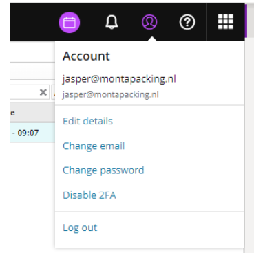
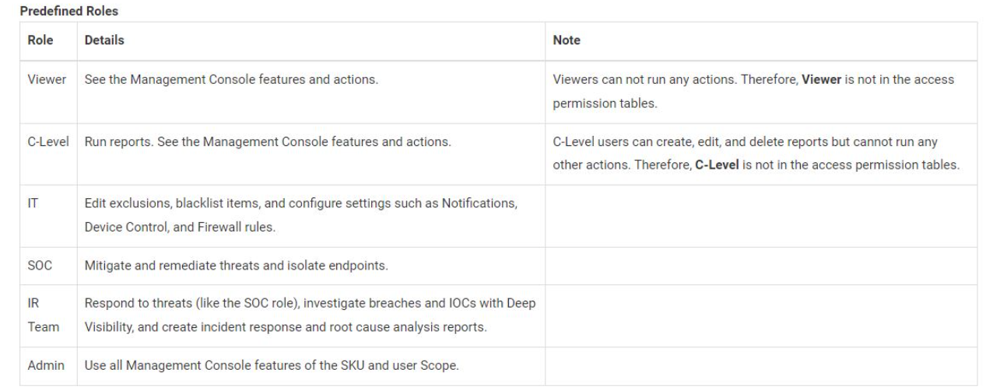

SentinelOne Algemeen
Aanmaak users
Bij het aanmaken van een user zie je geen optie voor 2FA.
Bij de aangemaakte user kun je kiezen voor Reset 2FA en dan krijgt de gebruiker een mail om het in te stellen.
Bij problemen met de aanmaak van users kun je de user laten inloggen via een Inprivate-venster.
Om 2FA opnieuw of op een andere telefoon in te stellen kun je (als je ingelogd bent) onder het account kiezen voor "Disable 2FA".

Je wordt dan vanzelf door een aantal stappen geleid.
Rollen

Monitoring
Middels onderstaand commando kan een lijst gemaakt worden van de processen die door SentinelOne "heavily" gemonitord worden.
sentinelctl create_agent_analyzer_report -o "C:\Temp\S1ActivityReport.txt" -m 30 (het laatste getal is het aantal minuten).